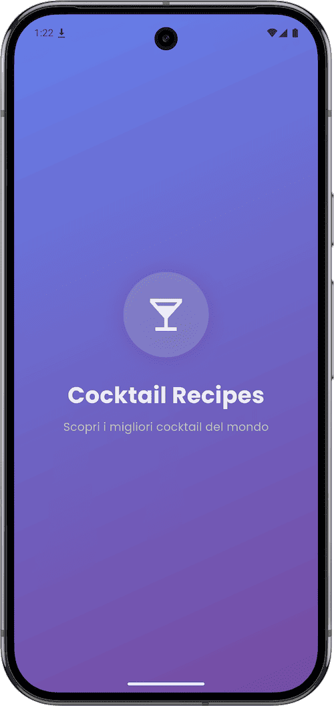

Cocktail Recipes - Mobile Application
The best cocktails recipes always with you in a single application.
Dart
Flutter
The best cocktails recipes always with you in a single application.
Cocktail Recipes is an offline-first bartending manual for Android and iOS: a catalogue of 115 cocktail recipes and 17 glass types that lives entirely inside the app. Every recipe, photograph and glass illustration ships with the app, so it never needs a network connection.
It is organised around four tabs: the cocktail catalogue, the glassware reference, your favourites, and a section with measures and bar tools. The catalogue is an adaptive grid with live search and ingredient chips to narrow the list to drinks built on a given spirit or mixer.
Tapping a card opens a detail page with a large photo that collapses into the title bar as you scroll, and the picture travels smoothly from the grid thumbnail.

Each recipe carries a photo, a short description, the ingredients with exact measures, numbered preparation steps, the recommended glass and a barman's note on when and why to serve it.
A star saves any cocktail to the favourites tab, which restores itself at every launch.
The app is built with Flutter and Dart. Cocktails and glasses are typed models loaded from bundled JSON files at startup, favourites are the only mutable state and are stored on the device, so there is no backend, no account and no synchronisation to manage.
Implements the data model (Cocktail, Glass), the JSON deserialisation of the two asset databases, and the search / ingredient-filter / favourites logic driving the catalogue.
Provides the single cross-platform UI for Android and iOS: the animated splash screen, the four-tab BottomNavigationBar, the adaptive GridView catalogue and the SliverAppBar detail pages with Hero transitions.
Persists the set of favourited cocktail names on the device, so the Preferiti tab survives app restarts without any server-side account.
Supplies the Poppins typeface used across the whole app, giving headings, ingredient lists and recipe steps a consistent, readable hierarchy.
Recipes and glasses live in bundled data files: editing a recipe or adding a new drink is a data change, not a code change.
Cocktail photography, glass illustrations and bar-tool images ship inside the APK/IPA, which is what makes the offline-first behaviour possible.